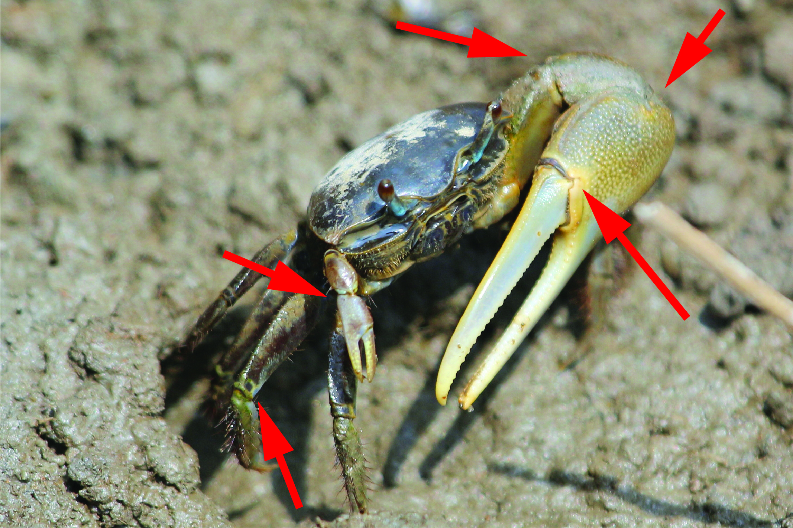

a. Major claw on male with large flattened fingers resembling shears, with almost no gape when closed. — Go to 4 Large flattened fingers on major clawLarge flattened fingers on major claw
b. Major claw on male with thinner, less flat fingers, not resembling shears, usually with clear gape when closed. — Go to 6 Thinner, less-flat fingers on major claw (as illustrated by; both crabs)
a. Major pollex lacks conspicuous pits on outside surface. — male monilifera
b. Major pollex has conpspicuous pits no outside surface (can be hard to see in field). — male insignis or male ornata Conspicuous pits on outside surface of major pollex
a. Major claw on male is predominantly a single color. — Go to 8 Major claw on male is predominantly a single colorMajor claw on male is predominantly a single color
b. Major claw on male is clearly multiple colors. — Go to 11 Major claw on male is clearly multiple colorsMajor claw on male is clearly multiple colors
a. Carapace is predominantly medium-to-dark blue; Limb joints have no distinctive red markings; Eyestalks appear gray-to-pale blue; Small fiddler with carapace breadth between 1 and 2cm. — male pugnax Medium-to-dark blue carapaceMedium-to-dark blue carapaceJoints lack distinctive red markings
b. Carapace is predominantly silvery-gray to gray-tan; Limb joints (including claws and walking legs) have distinctive reddish markings; Eyestalks appear white/gray, sometimes with a hint of orange; Medium fiddler with carapace breadth between 2 and 3cm. — male minax Silver-tan carapaceRed markings on joints of claw and limb
a. Major dactyl (movable finger) predominantly white; Major pollex is predominantly white; The outer manus (not including the pollex) of the major claw is predominantly pink; Tip of dactyl has a concave tooth with points at either end. — male inversa
b. Major dactyl (movable finger) pale pink-to-white, often with a darker red edge at the top; Major pollex is predominantly pale pink-to-white; The outer manus (not including the pollex) of the major claw is pink to red, often with darker red on the outer margins; Tip of dactyl comes to a normal point. — Go to 12
a. Carapace is a mix of black and white blotches; Eyestalks appear white/gray; The outer manus (not including the pollex) of the major claw does not have large tubercles (bumps); Walking legs are predominantly a mix of black and white. — male occidentalis
b. Carapace is a mix of blue and black blotches (usually more blue than black, but not always); Eyestalks appear green; The outer manus (not including the pollex) of the major claw is covered with large tubercles (bumps); Walking legs are predominantly red. — male chlorophthalmus
a. Eyestalks of crab are close together (a.k.a. "narrow-front"). — female hesperiae, female heteropleura, female insignis, female intermedia, female major, female maracoani, female monilifera, female ornata, female princeps, female stylifera, or female urvillei Narrow-front, with eyestalks close together
b. Eyestalks of crab are separated (a.k.a. "broad-front"). — female chlorophthalmus, female inversa, female minax, female occidentalis, female panacea, female pugilator, or female pugnax Broad-front with eyestalks farther apart